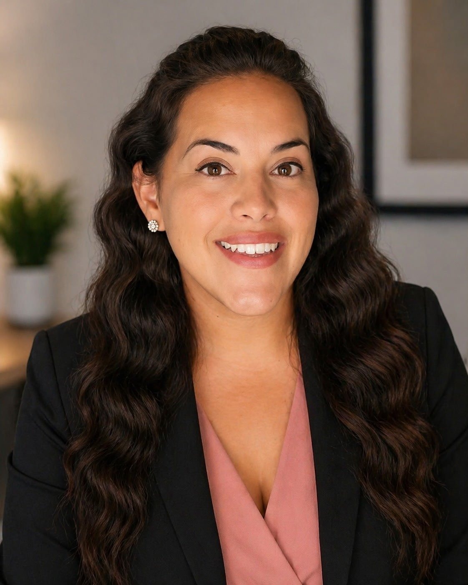
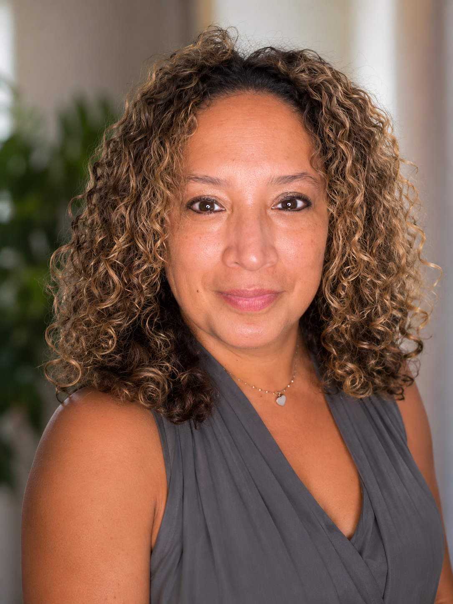

Meet Our Board
The Guided Pathway Foundation is guided by a team of individuals who share a deep commitment to emotional wellness, community access, and mission driven work.
Our board brings together leadership experience across clinical practice, organizational management, education, and community advocacy. This ensures that the foundation operates with integrity, purpose, and a clear focus on the people we exist to serve.
Shawn Deshield
Shawn serves as President of The Guided Pathway Foundation and Chief Executive Officer of Give Energy Make Smiles LLC. His leadership bridges the clinical expertise of Give Energy Make Smiles with the community reach mission of the foundation, ensuring that the tools we distribute are grounded in real therapeutic practice and designed for lasting impact.

Yahayda Fernandez
Yahayda brings a strong foundation in education, administration, and community advocacy to the board. With experience spanning early childhood education, organizational operations, and client support, she brings the kind of practical, people centered perspective that keeps mission driven work grounded in real community needs.

Alexandra Sanchez
Alexandra is a retired NYPD officer with a distinguished career specializing in domestic violence and community affairs. She now serves as an ordained interfaith minister and spiritual counselor. As a wife, mother of four, and caregiver for two family members living with Alzheimer's disease, Alexandra is deeply committed to helping individuals and families find hope, resilience, and healing through service to the community.
Interested in Serving?
We welcome applications from people who want to help guide this mission. If you share our commitment to emotional wellness and community access, we would love to hear from you.